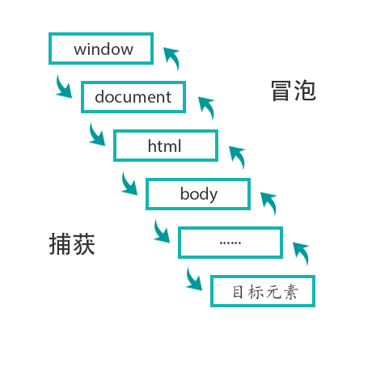

DOM事件类
（1）基本概念：DOM事件的级别
（2）DOM事件模型
（3）DOM事件流
（4）描述DOM事件捕获的具体流程
（5）Event对象的常见应用
（6）自定义事件
一、DOM事件的级别
| DOM事件类 | 事件级别 | 事件 |
|---|---|---|
| DOM0 | element.onclcik=function(){} |
点击事件：同一个元素，同类事件只能添加一个，如果添加多个，后面添加的会覆盖之前添加的 |
| DOM2 | element.addEventListener('click',function(){},false) |
false 是指冒泡还是捕获，可以给同一个元素添加多个同类事件 |
| DOM3 | element.addEventListener('keyup',function(){},false) |
事件定义方式与 DOM2 一致，增加了事件类型：鼠标事件、键盘事件… |
注：为啥没有DOM1事件：DOM1制定标准的时候，没有设计事件相关的东西，所以事件级别的时候直接跳过DOM1。
二、DOM事件模型
脚本模型、练练模型、动态绑定。
DOM事件模型：包括捕获和冒泡（ie用的是事件冒泡），捕获是从上往下到达目标元素，冒泡是从当前元素，也就是目标元素往上到 window。是两个过程。
三、事件流
事件流：浏览器在为当前页面与用户做交互的过程中，例如：点击数鼠标左键，这个左键是怎么传到页面上，这就是事件流。它是怎么响应的：主要分为三个阶段，第一阶段捕获，第二阶段是目标阶段，事件通过捕获到达目标阶段（即点击按钮，这个时候就是目标阶段），第三阶段冒泡，目标元素再上传到 window 对象
四、描述DOM事件捕获的具体流程
如下图所示：(冒泡事件与捕获事件相反)

第一接收的window，第二个document，第三个是html（获取document：document.documentElement）,依次往下到达目标阶段
1 | // 以下是捕获阶段，如要测试冒泡，把 true 修改 false 即可 |
五、Event对象的常见应用
（1）event.preventDefault()
（2）event.stopPropagation()：阻止冒泡。
（3）event.stopImmdiatePropagation()：事件优先级。
（4）event.currentTarget：事件代理。
（5）event.target：当前被点击的元素
六、自定义事件
1 | /* Event：指定事件名 */ |
赏
 支付宝打赏
支付宝打赏
 微信打赏
微信打赏
支付宝打赏
微信打赏
欣赏此文，打赏一下